计算机网络中最难/复杂的部分
概述
运输层考虑的是两个应用进程间的逻辑通信，端到端的通信，端口到端口的通信
运输层支持复用和分用，不同进程向下提供给网络层，使用一样的服务，由网络层传上来的内容经过运输层的分用发给不同进程
TCP提供一条全双工的可靠信道
UDP提供不可靠信道，但是胜在快
DCCP提供双向单播拥塞控制连接但不可靠的协议，无连接不可靠但仍有拥塞控制
SCTP
- 是面向消息的，
- 在socket种TCP只能绑定一个IP，但SCTP可以绑定多个IP，只要其中由一对IP能通， 这条SCTP连接就还可用
- 多流独立有序、无序传输
- 需要四次握手
- 使用心跳机制来管理路径的可用性，如果一条连接上的连续传输失败次数大于连接最大重传次数，就会通知应用程序并关闭连接
UDP User Datagram Protocol
只在IP之上增加了 复用分用、差错检测 的功能
不提供 确认 和 重传 的功能，这两个功能需要序号，然而UDP不带序号
主要特点
无连接
使用尽最大努力交付，不可靠
面向报文
没有拥塞控制，UDP无连接且不带拥塞控制不代表只要无连接就不带拥塞控制
UDP支持一对一、一对多、多对一、多对多的交互通信
UDP的首部开销小，只有8字节，而TCP有20字节
如何理解UDP是面向报文的
UDP把应用层交下来的报文添加头部后就交给网络层，应用层交给UDP多长的报文UDP就发送多长的报文，既不合并，也不拆分
接收方接收到UDP报文后去掉头部后一次交付给上层，一次交付一个完整的报文
因此应用层应当选择恰当的报文长度，若太长则会引发IP分片，若太短则使IP首部相对过大，传输效率低
UDP首部
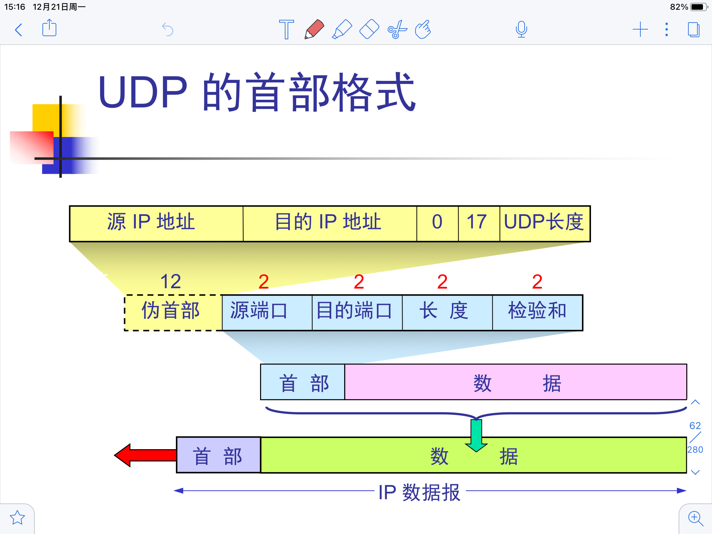
计算检验和时需要把伪首部和UDP数据报连接在一起，检验和是为了检测整个UDP报文是否出错
伪首部是为了二次验证
计算检验和时先填充、然后以两个字节为单位对整个UDP报文进行二进制反码求和
TCP Transport Control Protocol
面向连接，提供点对点的全双工服务
使用socket连接，socket包括IP地址和端口号
TCP提供可靠交付的服务，有顺序控制、重发机制、端到端校验和、拥塞控制的功能
TCP面向字节流报文段格式
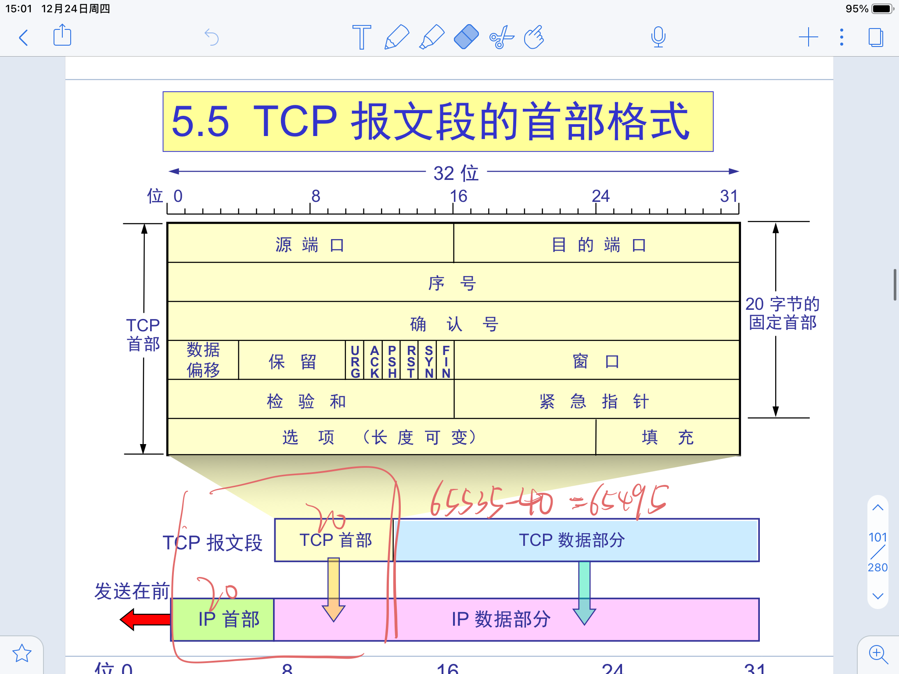
序号
- TCP的每一个字节都有一个序号，首部中的序号字段是本报文段发送的数据的第一个字节的序号
确认号
- 期望收到对方的下一个报文段的数据的第一个字节的序号
数据偏移（首部长度）
- 以四字节为计算单位
保留
- 目前全为0
六个标志位
- URG 紧急标志，表明高优先级的数据，不排队、不进缓存、直接提交
- ACK 确认标志，当ACK为1时确认号才有效
- PSH 推送标志，用不到
- RST 复位标志，出现重大差错，需要重新建立连接
- SYN 同步标志， 表示是一个连接请求或连接接受报文
- FIN 终止标志，用于释放连接
窗口
- 以字节为单位，告知对方自己的接受能力，从而使对方设置发送窗口的大小
- 16位，两个字节，因此窗口最大为$2^{16} - 1$
检验和
- 检验首部和数据部分，计算时要在报文段的前面加上12字节的伪首部
紧急指针
- 配合URG使用，指出紧急数据共有多少字节
选项
- 选项的一般格式为类型一字节、长度一字节、信息若干字节，总和最长40字节

- MSS Maximum Segment Size TCP报文中数据字段的最大长度，可以限制分片的产生，两个方向的MSS可以不同
- 窗口扩大选项，窗口最大$2^{16} - 1$，有些长肥管道的时延带宽积非常大，即使窗口到达最大也无法填满信道，此时可以使用窗口扩大因子进行扩大。
- 窗口扩大因子实际是移位数，假设TCP头部中的通告窗口大小为$N$，窗口扩大因子（位移数）是$M$，那么TCP报文段的实际接收通告窗口大小为：$N \times 2 ^ M$。M的取值范围为0 ～ 14
- 这样能把窗口最大 扩大到$2^{16 + 14} = 2^{30} = 1G$
- 没有那么细致，毕竟只是移位
- 时间戳，防止序列号回绕，乱序时间判断的依据，计算RTT
- SACK，4号表示支持SACK，5号是SACK的内容，最多三个SACK块
填充
- 整个首部长度需要是4字节的整数倍
可靠传输
停止等待协议 （自动重传请求 ARQ协议 Automatic Repeat Request）
A向B发送一个分组，B收到后向A进行确认，A收到确认后发送下一个分组
A发送结束后设置一个超时重传计时器 <第一个计时器> , 超过等待时间没有收到确认就认为分组丢失，重新发送
A发送后需要保存一个刚刚发送的报文的副本，收到B的确认后再撤销计时器和副本
分组和确认分组都需要编号，从而明确收到的确认分组对应于发出去的哪个分组
分组正确到达B但是没有收到确认，存在两种可能
- 确认丢失，重传之后B丢弃重复分组，再次发送确认；
- 确认迟到，B收到重传的重复分组，丢弃，A收到迟到的确认报文，什么也不做
缺点
信道利用率很低，利用率为Ｕ，则
其中$T_D$是发送时间，$T_A$是发送ACK的时间
可以使用流水线传输的方式提高效率、
连续ARQ协议
累计确认
只对按序到达的最后一个分组发送确认
优点是及时确认丢失也不必重传，前面的ACK丢失，后续的ACK可能足以确认前面的报文段了
缺点是不能向发送方反映出接受方已经城阙收到的所有分组的信息
Go back N
部分分组丢失后发送方只收到一个靠前的ACK，此时需要退回来重传已经发送过的N个分组
以字节为单位的滑动窗口
最大为$2^{16}-1$
发送方和接收方各有一个缓冲（Buffer）
对于发送方而言，其缓冲数据内的数据可以分为四类

其中第二类和第三类在一个发送窗口中
收到累计确认后，窗口右移
对于接收方而言，他的缓冲数据中存在三类，已接收，未接受准备接收，未接受未准备接收
所谓已接收实际意味着已发送确认，ACK由TCP协议栈回复，不需要等进程回复，因此不存在已接收未回复
其中未接受准备接收就是接收窗口，似乎说成未确认准备确认更合适一些？
发送窗口和接收窗口的关系

利用滑动窗口实现可靠传输
最基本的传输可靠性来自于确认重传机制，滑动窗口是实现确认重传的一种方式
发送端只有在收到对端发送的对于己方发送窗口内的字节的ACK且前面全都完成确认的情况下窗口的左边界才会移动（绕）
对于已有的确认不能撤销，因此左边沿不能左移
右边沿通常是不动和右移，在收到缩小窗口大小的信号后可能左移，但是非常不推荐
举个例子
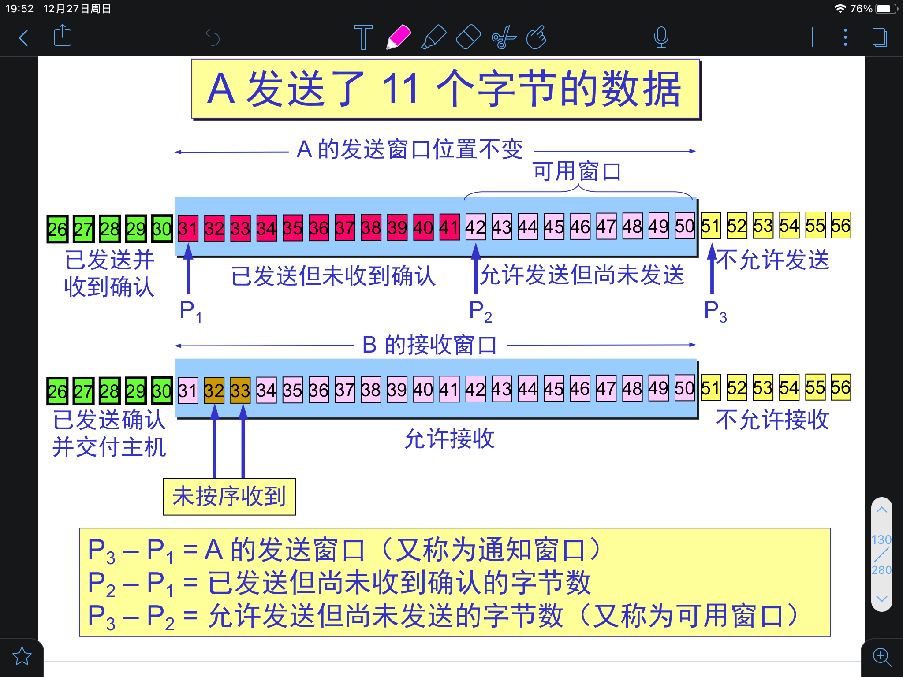
Buffer 和窗口的关系
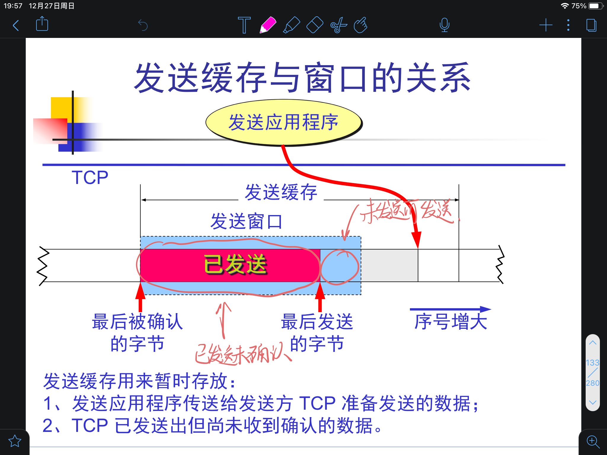
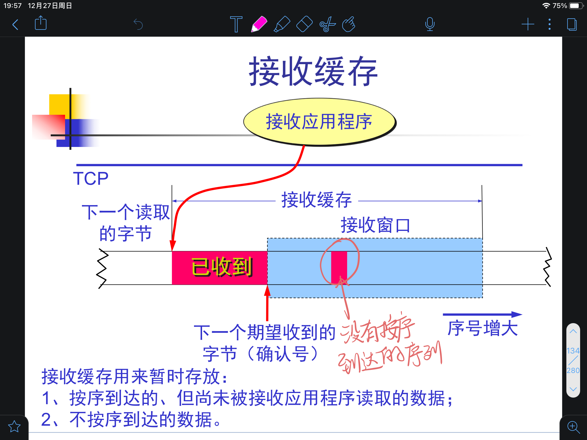
三个要点
- 发送窗口根据对方的接收窗口进行设置， 但是两者并不总是相等，因为网络传送窗口值是有延迟的
- 对于不按序到达的数据，TCP通常是临时存放在接收窗口中，在字节流中缺少的字节收到后再交付给上层（SACK？）
- 接收方必须支持累计确认，可以适当推迟确认，也可以捎带确认、
超时重传时间 RTO 的选择
为什么需要考虑超时重传时间？
重传时间过短会引起不必要的重传，占用资源；重传时间过长会导致空闲，降低传输效率
TCP通过RTT来计算RTO
第一次测量到$RTT$时，$RTT_S = RTT$，$RTT_D = \frac{RTT}{2}$
因此第一次测量到$RTT$时，$RTO = RTT + 4 \times \frac{RTT}{2} = 3RTT$
因为$newRTT_D$需要用到$RTT_S$，所以应该先算，如果先算$RTT_S$，旧的值就被覆盖了
$\alpha = \frac{1}{8}, \beta = \frac{1}{4}$
一个题目
假定TCP在开始建立连接时，发送方设定的超时重传时间$RTO = 6s$
（1）当发送方收到对方的连接确认报文段时，测量出$RTT$样本值为$1.5s$，计算现在的$RTO$值
（2）当发送方发送数据报文段并收到确认时，测量出$RTT$样本值为$2.5s$，计算现在的$RTO$值
首先要明确$RTO$的计算和初始值没有任何关系，$6s$ 是一个干扰数据
第一问：
第一次测得 $RTT$ 时 $RTO = 3RTT = 4.5s$
此时$RTT_S = 1.5, RTT_D = 0.75$
第二问：
$newRTT_D = \frac{3}{4} \times 0.75 + \frac{1}{4}|1.5 - 2.5| = \frac{13}{16}$
$newRTT_S = \frac{7}{8} \times 1.5 + \frac{1}{8} \times 2.5 = \frac{26}{16}$
$newRTO = newRTT_S + 4RTT_D = \frac{78}{16} = 4.875$
Karn 算法
计算RTT时，如果报文段重传了就不计入往返时间样本
存在一个问题，如果由于某种神秘力量，时延突然增加，在原本的时间内就收不到确认，发起重传，但是重传的RTT又不被采用，就会导致一直无法更新重传时间
修正的 Karn 算法
每重传一次，RTO就增大一些
选择确认SACK
双方必须事先商定好
在选项部分中指明收到的 不连续字节块 的边界
一个SACK报文最多只能指明三个字节块的边界信息
- 首部选项部分长度最多四十字节，一个边界用掉四字节，去掉类型和长度
流量控制
控制发送方不要发得太快
利用滑动窗口实现流量控制
对于接收方发出的每一个ACK，都包含自己的接收窗口大小，表示自己还能接受多少数据，发送方收到之后调整自己的发送窗口
会带来死锁的局面，当接收窗口为0时发送端便不再发送数据，但是如果接收方之后发送的非零窗口大小的报文丢失了，发送端就永远无法得知接收端已经准备好接收数据，从而产生死锁的情况
持续计时器
为了解决死锁的情况，TCP为每一个连接设置了一个持续计时器 <第二个计时器>
如果持续计时器到时，发送方就向接收方发送一个零窗口探测报文段，若不是零，则在AC中告知，如果仍然是零，发送方就重设计时器
流量控制下的传输效率 / 发送时机
维护一个MSS Max Segment Size，缓冲中存放的数据大于MSS时组装成一个TCP报文发出去
发送方的进程显式push
- 发送方设置一个发送计时器，把缓冲中的数据装入报文段（长度不超过MSS）
Nagle 算法
对于小数据量的传送，Nagle算法会将他们写入缓冲区，累计到一定数目后再一起发送
1 | if有新資料要傳送 |
在任意时刻，网络中最多只能有一个未被确认的小段，在收到确认后才会发送，也就是说发送的频率取决于RTT，是一种自时钟，ACK返回越快，数据传输也就越快。
糊涂窗口综合征
由于发送方发送能力差（产生数据慢）或者接收方处理能力差（消耗数据慢）导致了发送窗口越来越小，以至于一次只能发送一个字节，造成巨大的浪费
发送端采用Nagle算法进行问题避免，发送端累计数据到MSS之后进行发送
接收端采用David D Clark's solution进行问题避免，暂时关闭接收窗口直到有能容纳MSS的空间；或者使用延迟确认的方法，不立即发送ACK，发送端会一直等待，直到接收方空间够了再发送ACK
拥塞控制
拥塞是一个系统性的问题，仅仅优化局部往往难以解决问题
流量控制是局部，拥塞控制是全局
拥塞控制并不能真正控制拥塞，只是让拥塞晚一点来
拥塞控制是动态的问题
慢开始 & 拥塞避免
基于窗口的拥塞控制
发送方维护一个拥塞窗口cwnd，其随着网络状态动态变化，发送方的窗口为对方的接收窗口和拥塞窗口的较小值
只要没有出现拥塞，拥塞窗口就再增大一点，以便发送更多的分组，一旦出现拥塞，拥塞窗口就减小一点
工作流程
初始情况下设置拥塞窗口大小为1 MSS
每收到一个新的报文段的确认，窗口大小加一（以MSS为单位）
- 是一个一个增加的，但是在一个传输轮次中的表现是经过一个轮次窗口大小加倍
- 一个传输轮次就是一个RTT
- 这段时间cwnd以指数规律增长
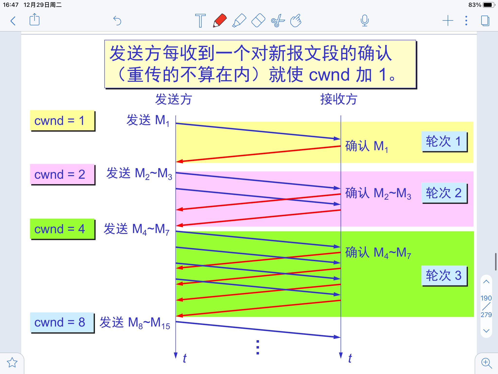
随着cwnd不断增加，会到达一个阈值，之后每一轮cwnd只增加一
- 这个部分为拥塞避免，方法为加法增大
当网络拥塞发生后，cwnd回到初始值，阈值被重新设定为网络拥塞发生时cwnd大小的一般，重新进行慢开始
- 减小阈值的操作被称为乘法减小
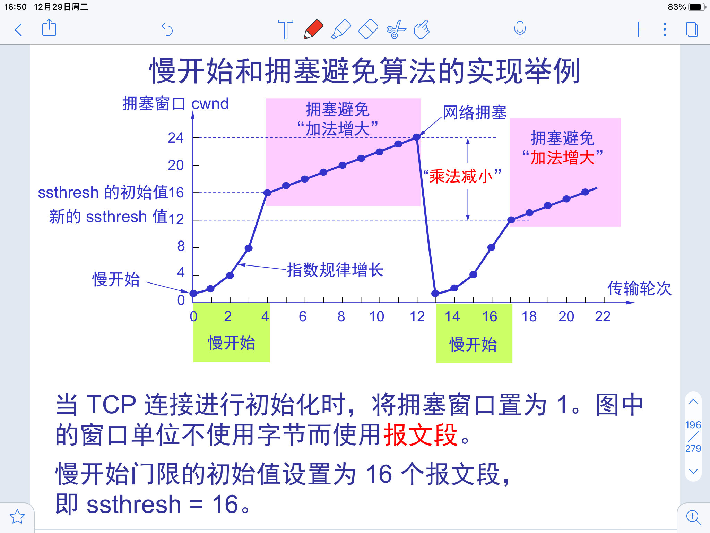
快重传
接收方每收到一个失序报文段后就立即发送重复确认，这样可以让发送方尽早直到有报文段没有到达接收方
发送方只要连续三次收到重复确认，就重发
没有取消超时重传计时器，但是在部分情况下可以更快重发
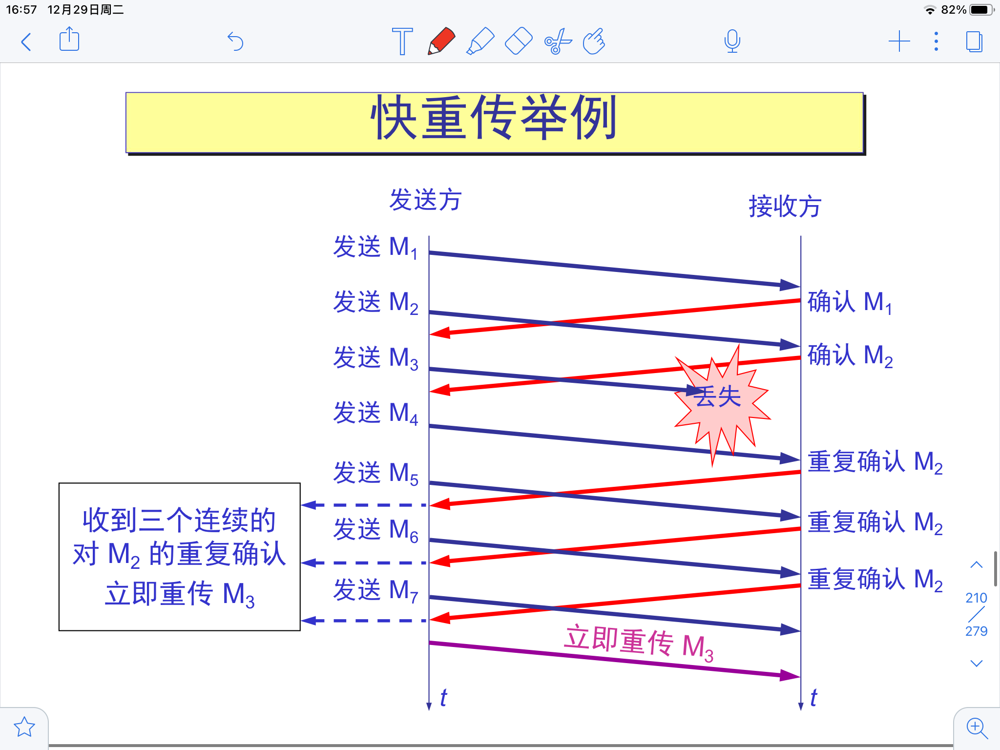
快恢复
发送方收到三个重复确认后立即执行乘法减小，修改阈值，但是此时并不从一开始，而是直接从新的阈值开始进行加法增大
超时执行慢开始，三个重复确认执行快恢复
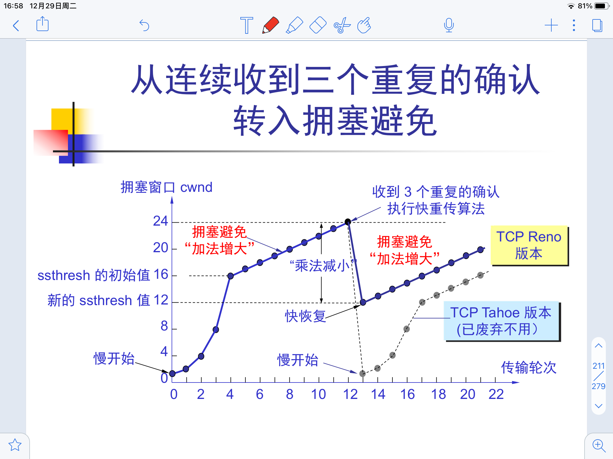
算法
Tahoe
旧的算法，没有快恢复，在恢复丢失数据报期间不能发送新的数据包，因为此时的已发送未确认大于窗口值
Reno
相比Tahoe增加了快恢复
NewReno
Reno提出的快速恢复算法提高了包丢失后的吞吐量和健壮性，但缺陷是它只考虑了只丢失一个包的情形，只要丢失了一个包，就被认为是发生了一次拥塞。
在实际的网络中，一旦发生拥塞，会丢弃大量的包。如果采用Reno算法，它会认为网络中发生了多次拥塞，则会多次将cwnd和ssthresh减半，造成吞吐量极具下降，当发送窗口小于3时，将无法产生足够的ACK来触发快重传而导致超时重传，超时是很严重的事情。
在只丢失一个数据包的情况下，NewReno和Reno的处理方法是一致的，而在同一个时间段丢失了多个包时，NewReno做出了改进。
Reno快速恢复算法中，发送方只要收到一个新的ACK就会退出快速恢复状态而进入拥塞避免阶段，NewReno算法中，只有当所有丢失的包都重传并收到确认后才退出。
NewReno提出了PACK和RACK，在重传完成之前的ACK都是PACK，只有收到RACK之后才会结束快恢复
SACK
Reno的衍生版本，允许使用SACK来告知接收端自己收到了哪些部分
但是对于肠肥管道而言，每次告知对方自己收到了哪些部分的代价是很大的，此时的SACK会消耗大量的资源

随机早期检测 RED Random Early Detection
网络的主体部分是通信子网，上述算法都是从端系统的角度来考虑的，其实对拥塞影响最大的是路由器的丢弃算法。
RED将路由器的到达队列划分为了三个部分
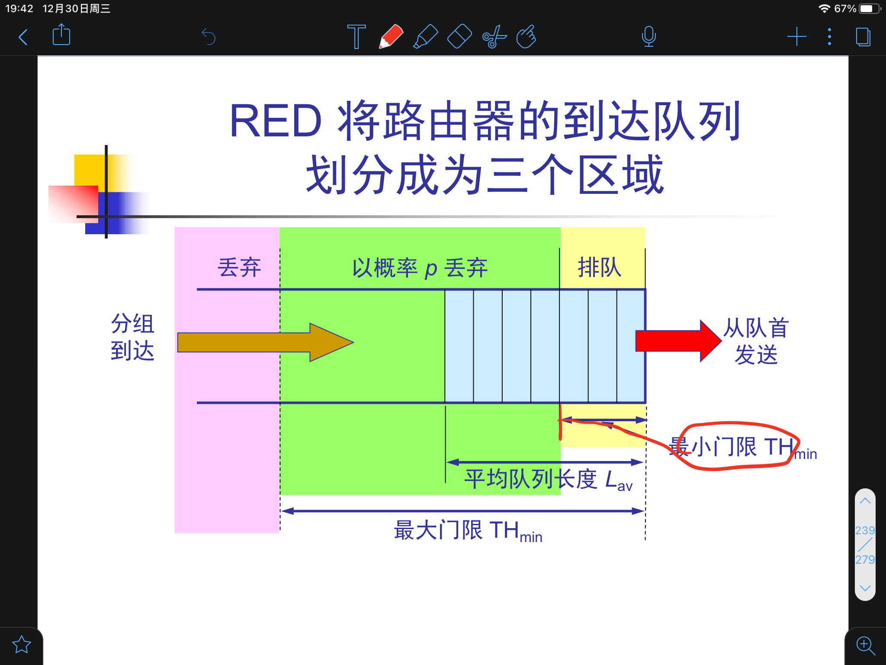
通常而言最大阈值是最小阈值的两倍，如果阈值设置不合适，RED也会引起类似于尾部丢弃导致的全局震荡
对于P丢弃，P并不是一个确定的值，而是会随着当前的平均队列长度不断变化
平均队列长度的计算
$L$表示当前队列长度的样本，$L_{AV}$是旧的平均队列长度，计算方式和RTO的计算很像，$\delta$ 是零到一之间的数。
TCP的建立与释放
大名鼎鼎的三次握手
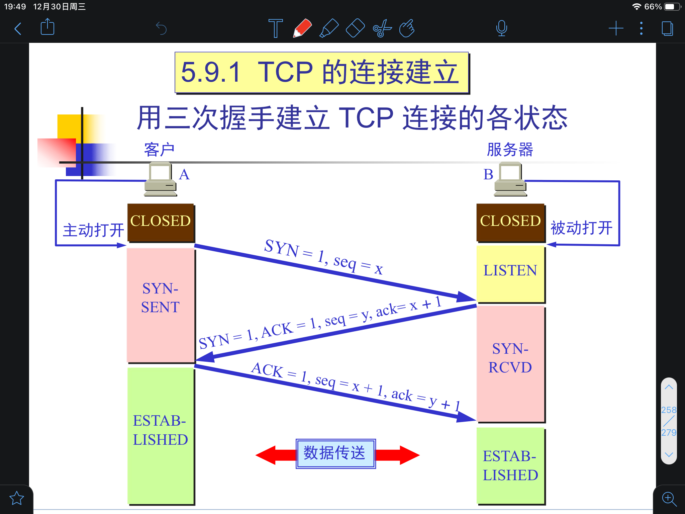
TCP的连接实际上是一种虚连接，只是维护一些状态值而已
SYN=1的报文段不携带数据，但是要消耗掉一个序号，因为SYN报文段需要确认，而确认是需要序号的
ACK报文段可以携带数据（捎带确认），但是如果不携带数据，则不消耗序号，因为不需要对ACK进行确认
说白了序号就是为了确认，不需要确认就不用序号
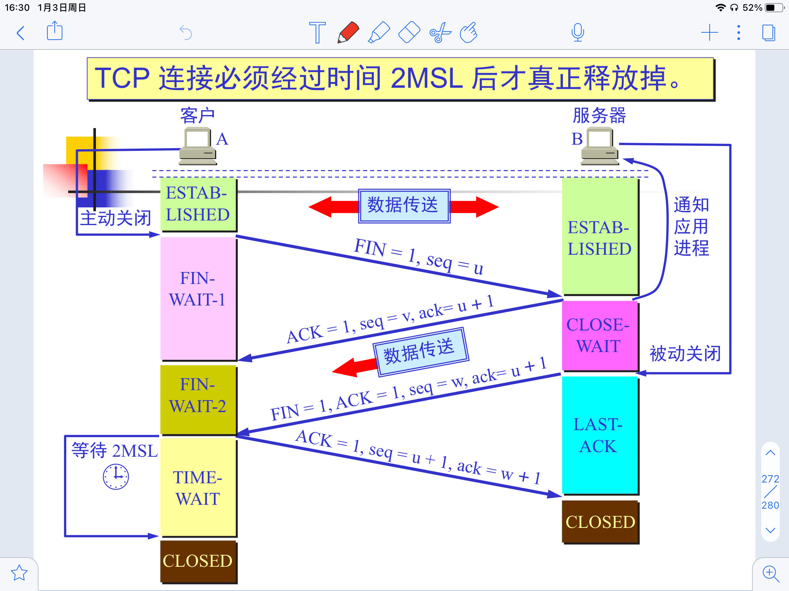
主动关闭一方发送的序号不是随机值,而是发送到这个值了
被动关闭放的ACK不消耗序号
此时TCP连接处于半关闭状态
在左侧发送完最后的确认之后进行一个$2 \times MSL$的计时,使用时间等待计时器 <第三个计时器>
MSL为最长报文段寿命
这个计时器是为了保证A发送的最后一个ACK能到达B,且这个连接持续时间中的所有报文段在网络中失效
为了防止TCP出现长时间的空闲,通常还有一个保活计时器 <第四个计时器>
超时之后每隔一段时间发送一个探测报文段,发送十个探测报文段还没有收到响应就假定客户除了故障,主动终止TCP连接
TCP 有限状态机